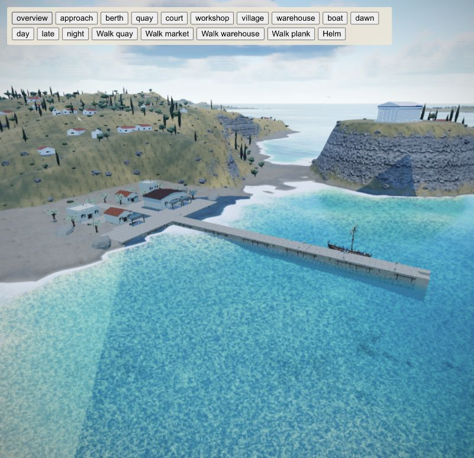
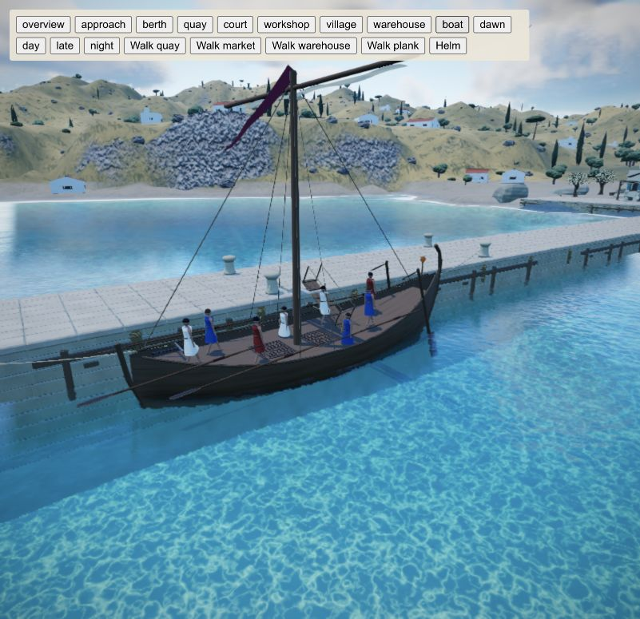
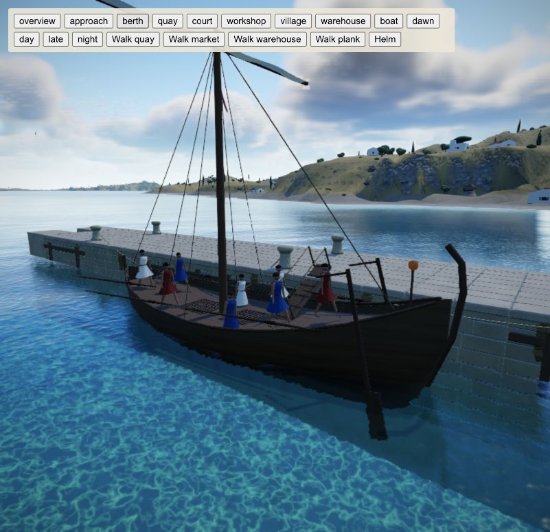
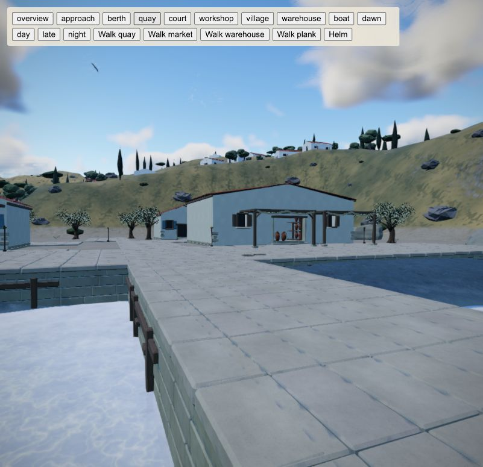
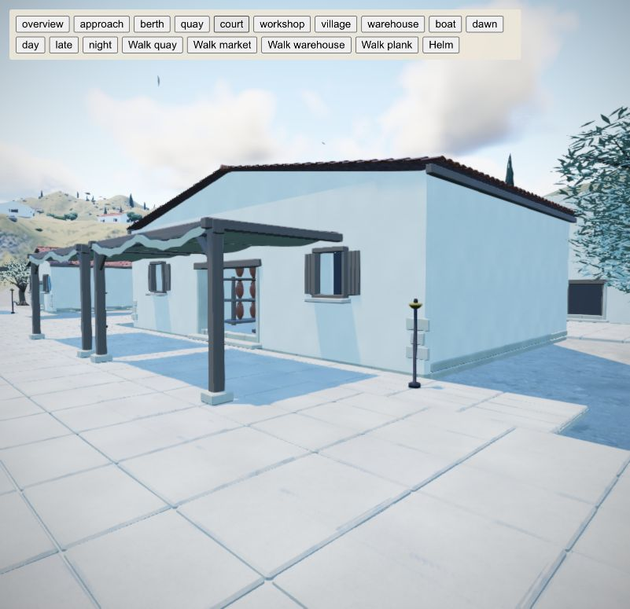
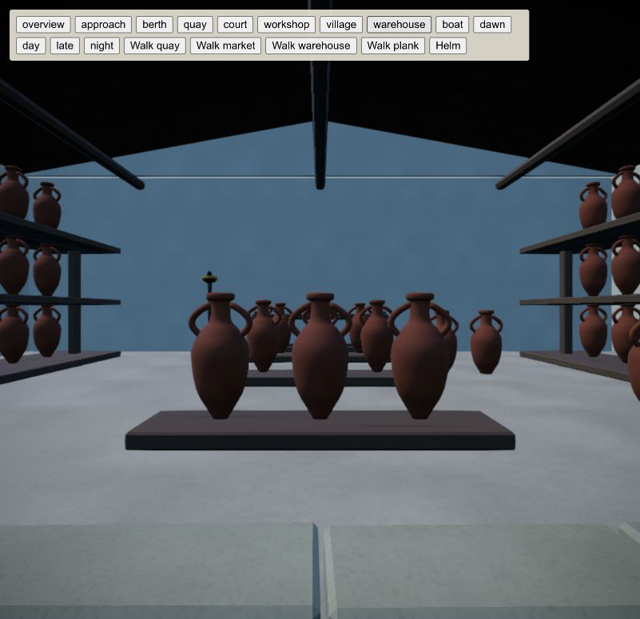
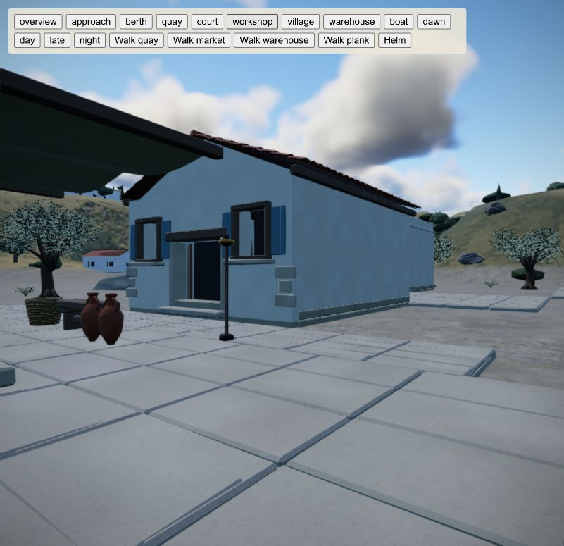
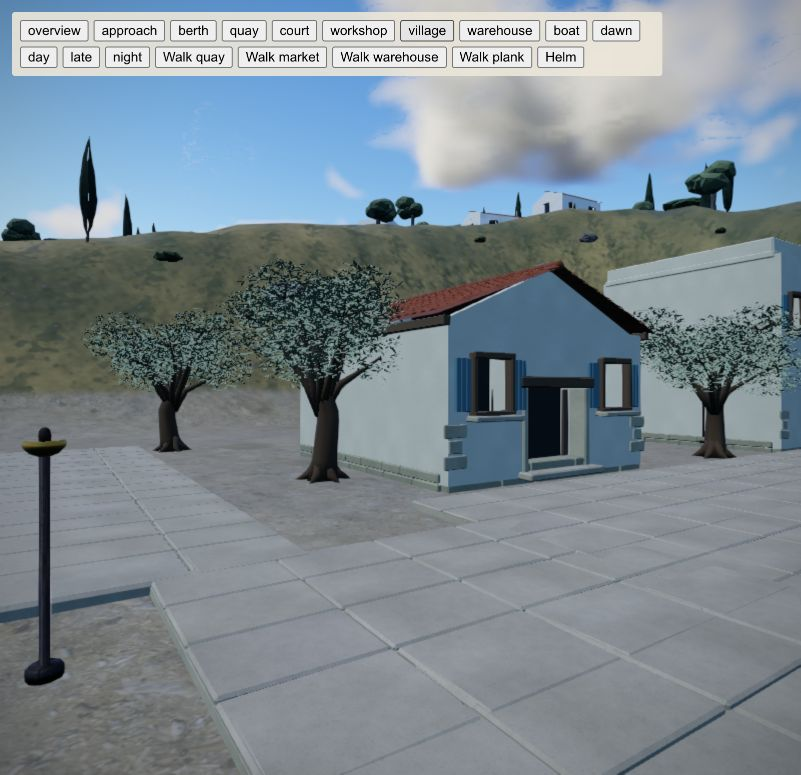
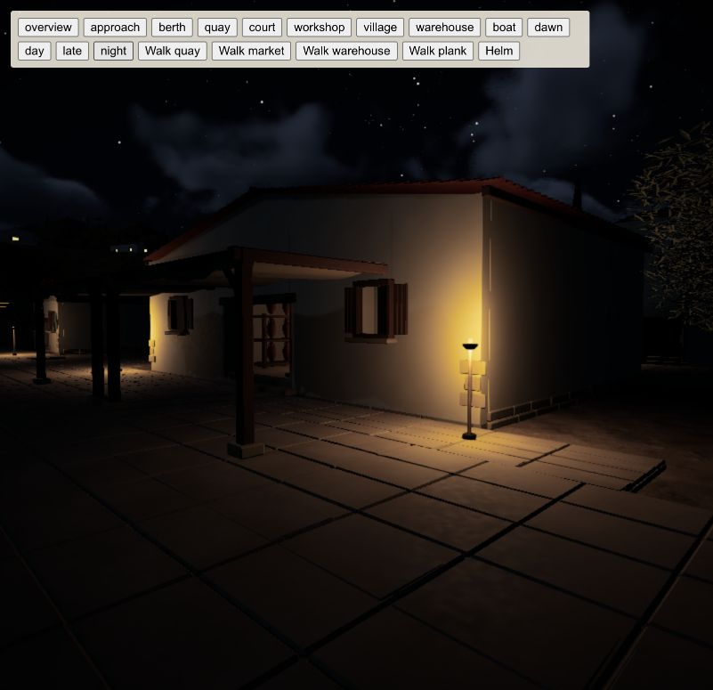

Limestone, quiet timber and linen. A working waterfront inside the game's generated archipelago, with the playable Kyrenia merchant at its berth.

The long mole leads into a broad landing, with a warehouse and market facing the water. The surrounding village stays subordinate.

The silhouette carries the design: a continuous timber hull, a tall simple rig and restrained detail. The proportions come from the playable merchant.

Mooring stones, fenders and the narrow boarding plank give the berth a clear working scale.

Modeled coping and paving joints make the close view readable without relying on busy surface noise.

The calmer plaster and timber let the loading doorway, linen and pottery do the visual work.

A real doorway leads to an enclosed volume with clear aisles and ordered racks. Thick gables close the roof from inside.

Muted shutters, a small canopy and a few useful objects keep the street legible.

The taller house and grouped olives give the upper court rhythm. The route remains clear between their trunks.

Small warm pools make the working court readable after dark, while the roof and surrounding landscape stay quiet.